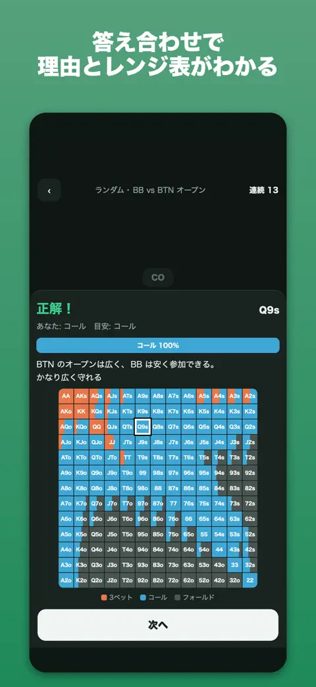

テキサスホールデムの学習アプリ（iPhone）
プリフロップ練習帳
プリフロップの判断を、
クイズでおぼえよう。
最初に配られた2枚で、参加するか、降りるか。6人卓・100BB でよく教えられている「目安のレンジ」を、問題を解きながら身につける学習アプリです。フロップ・ターン・リバーの練習問題もあります。
- 10の場面
- 13×13のレンジ表
- 苦手な手の復習
- フロップ・ターン・リバーも
無料・広告あり／iPhone（iOS 18 以降）
▶ プレイのようす（音なし）
プリフロップ練習帳とは？
プリフロップ練習帳は、テキサスホールデムのプリフロップ（最初の2枚で参加するかどうか）の判断を、クイズでおぼえる学習アプリ。6人卓・100BBの目安のレンジ、13×13のレンジ表、苦手な手の復習、フロップ・ターン・リバーの練習問題つき。無料（広告あり）のiPhoneアプリ。
こんな人に：ルールは覚えたけれど、最初の2枚でどう動くか迷う人。
- 料金無料・広告あり
- 対応iPhone（iOS 18 以降）
- ジャンル⚔️ 対戦




← 横にスクロールできます →
こんな人におすすめ
- ルールは覚えたけれど、最初の2枚でどう動くか迷う人
- レンジ表を、見るだけでなく問題でおぼえたい人
- すきま時間に、1問ずつコツコツ練習したい人
遊び方は3ステップ
- 見る席の並びの図と、前の人のアクション、配られた2枚が出ます。
- えらぶフォールド・コール・レイズ（最初に参加するときはオープン）から1つ選びます。
- たしかめる答え合わせで、行動の割合の帯と、ひとことの理由、その場面の 13×13 のレンジ表が出ます。
📘 練習のしかた
場面と2枚を見る
席の並びの図と、前の人のアクション、配られた2枚が出ます。
えらぶ
フォールド・コール・レイズ（最初に参加するときはオープン）から1つ選びます。
たしかめる
答え合わせで、行動の割合の帯と、ひとことの理由、その場面の 13×13 のレンジ表が出ます。
苦手な手を復習
まちがえた手は、間をあけてもう一度。4回続けて正解で卒業です。フロップ・ターン・リバーの練習問題もあります。
特徴
- 10の場面6人卓・100BB の場面からまんべんなく
- 6つの席で練習UTG・HJ・CO・BTN・SB・BB
- 4回続けて正解で卒業まちがえた手を、間をあけてもう一度
- 2〜500人のトーナメント練習CPU とだけ遊ぶ練習。振り返りつき
アプリ内課金や景品はありません。トーナメントやリングゲームも CPU とだけ遊ぶ練習で、使うのは練習の中だけの点数です。レンジ表は覚えやすく丸めた目安で、ソルバーの正確な答えではありません。
🆕 さいきんのアップデート
バージョン 1.0.16（2026年11月19日）
- 設定に「振動」のオン・オフを入れました。オフにすると、ブルブルしなくなります
- BB のときは、プリフロップで「先にフォールド」を出さないようにしました（チェックできることが多いため）
- ファストフォールドしたハンドも、次のハンドのあいだに判断と解説を見られるようにしました（手札の下のカードをタップ）
- 練習の成績ランキングを入れました。本番の持ちポイントと、今週のクイズの正解数を、ニックネームでくらべられます
- フォールドとチェックのボタンの位置をいつも同じにして、押しまちがえにくくしました
- 小さい画面でも、ホームの設定・音のボタンがスクロールしなくても見えるようにしました
- どの練習がむずかしいかを知るため、名前のない遊びの数だけを集めるようにしました（設定でオフにできます）
💬 よく聞かれること
ポーカーのプリフロップを覚えるアプリは？
プリフロップ練習帳は、テキサスホールデムの最初の2枚で参加するかどうかの判断を、クイズでおぼえる学習アプリです。6人卓・100BB の目安のレンジと、13×13 のレンジ表で答え合わせできます。
📖 ことばの説明
- プリフロップ
- テキサスホールデムで、最初の2枚が配られたあと、場にカードが出る前の判断。
- レンジ
- ある場面で参加する手の組み合わせの目安。13×13 の表で表します。
くわしい使い方
席の並びの図と、前の人のアクション、配られた2枚のカードを見て、フォールド・コール・レイズ（最初に参加するときはオープン）から1つ選びます。答え合わせで、目安のレンジ（13×13 の表）と、ひとことの理由が出ます。
アプリ内課金や景品はありません。トーナメントやリングゲームも CPU とだけ遊ぶ練習で、使うのは練習の中だけの点数です。
- ランダム出題：6人卓・100BB の10の場面からまんべんなく出題します
- ポジション別練習：UTG・HJ・CO・BTN・SB・BB のどれか1つの席に絞って練習します
- 苦手な手だけ：まちがえた手を、すぐ・5分後・1時間後・1日後と間をあけてもう一度出します。4回続けて正解すると卒業です
- 場面をつくる：人数・スタック・自分の席・前の人のアクションを選ぶと、その場面の目安のレンジを計算して表示します
- レンジ表をみる・成績：10枚の表をタップして確かめたり、ポジション別・場面別の正解率を見たりできます
よくある質問
無料ですか？
はい、無料でダウンロードして遊べます（広告あり）。App Store のページからどうぞ。
どの端末で使えますか？
iPhone（iOS 18 以降）で使えます。Android 版はありません。
このレンジは正しいの？
6人卓・100BB でよく教えられている一般的な形を、覚えやすいように丸めた「目安」です。ソルバーの正確な答えではありません。「場面をつくる」のレンジは、手の勝率・位置・ポットオッズから作るアプリの計算モデルです。
音を消したい
ホームの右下の「音 ON」ボタンで、オン・オフを切り替えられます。
成績を消したい・引き継ぎたい
成績はこの iPhone の中にだけ保存しています。「成績」の画面のいちばん下の「成績をリセット」で消せます。アプリを削除すると成績も消えます。ほかの端末への引き継ぎにはまだ対応していません。
お問い合わせ
不具合やご要望は、メールでお知らせください。お使いの iPhone の機種と iOS のバージョンを書いていただけると助かります。